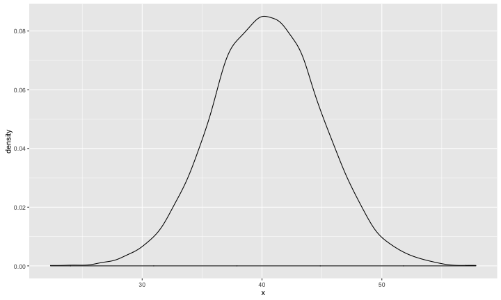

- 敘述統計
- 機率論
- 假設檢定
- 信賴區間
- 統計模型
- 統計科學的各領域簡介
Statistics
Wush Wu
國立台灣大學
課程大綱
課程目標
- 具備和統計學家溝通的能力
- 理解統計科學要解決的問題
- 理解統計科學的名詞與其背後的含義
- 理解統計學家解決問題的方式
限制聲明
- 統計是一門需要時間學習的專業技能。同學若想要學習專業的統計知識，仍然需要找專門介紹統計的課程
- 本課程的目的在讓同學透過R來「體驗」統計的思維，以增加未來和統計學家的溝通能力
關於練習
- 請使用R 搭配swirl課程：RStatistics進行
敘述統計
何謂敘述統計？
- 描述數據的方法
- 圖形化
- 數值指標
數值系統
- 名目尺度（數字之間無意義）
- 順序尺度（數字的順序有意義）
- 區間尺度（數字的加減有意義）
- 比例尺度（數字的倍數有意義）
- 類別型變數：名目尺度與順序尺度
- 數值型變數：區間尺度與比例尺度
範例一
- 請問下列各欄位屬於哪種數值系統？
| 核備文號 | X座標 | Y座標 | 通報時間 | 施工單位 |
|---|---|---|---|---|
| 102002163 | 305380.1 | 2771131 | 1031030102858 | 台電輸變電 |
| 102002875 | 304886.2 | 2770306 | 1031028080916 | 台電輸變電 |
| 102004900 | 302735.8 | 2770178 | 1040428094229 | 台電輸變電 |
| 103000673 | 307602.7 | 2764702 | 1040819162541 | 新工處 |
| 104000052 | 305401.1 | 2772324 | 1040912082416 | 新工處 |
| 104000101 | 306300.3 | 2769063 | 1041218085247 | 新工處 |
數值系統間的互換
X座標+Y座標=>行政區
| X座標 | Y座標 | 行政區 | 施工位置 |
|---|---|---|---|
| 305380.1 | 2771131 | 松山 | 敦化南路1段68號前分隔島綠帶 |
| 304886.2 | 2770306 | 大安 | 大安路1段116巷於復興南路一段與仁愛路四段27巷間 |
| 302735.8 | 2770178 | 中正 | 紹興南街17~21-3號與仁愛路1段1~19號 |
| 307602.7 | 2764702 | 文山 | 木新路一段，南起指南路一段，北至木柵路三段。 |
| 305401.1 | 2772324 | 松山 | 松山信義區 |
| 306300.3 | 2769063 | 松山 | 1.松山及信義區8米以上計畫道路 |
| 2.其它交辦指定之行政區 |
類別型變數的圖形化(長條圖)

類別型變數的圖形化（圓形圖）

連續型變數的圖形化(直方圖)

直方圖 v.s. 長條圖
- 長條圖適用於類別型資料，直方圖適用於連續型資料
- 長條圖的bar 之間有間隔，直方圖則是連續
- 長條圖的順序不一定有意義，直方圖的順序有意義
數據指標
- 中心位置
- 散佈程度
數據的中心位置
- 平均數（適用於數值型變數）
- 中位數（適用於數值型變數）
- 眾數（適用於類別型變數）
平均數(mean)
- \(\bar{x} = \frac{1}{N} \sum_{i=1}^N x_i\)
- \(x = \{1, 2, 3, 4, 6\}\) 的平均數為 \(\frac{1 + 2 + 3 + 4 + 6}{5} = 3.2\)
- 總和(sum)、平均與個數
平均數(mean)
- 最小化\(\sum_{i = 1}^N {(x - x_i)^2}\)

平均數(mean)的應用
- 過去三十天，每天網路廣告平均的營業額為50萬
- 平均數常常被當成基準做比較
- 今天的營業額為60萬 ==> 好
- 今天的營業額為40萬 ==> 不好
- 平均數常常被當成基準做比較
- 移動平均
- 處理時間序列（隨著時間不斷延伸的資料）常用的技巧
- 例：股票的周線、月線
- 加權平均
- 每筆資料的重要性不同
移動平均在股票分析的應用

平均數的濫用

中位數(median)
- 觀測值中間的數值
- 50%的數值小於中位數
- 50%的數值大於中位數
- \(x = \{1, 2, 3, 4, 6\}\) 的中位數為 \(3\)
- \(x = \{1, 2, 3, 4, 6, 7\}\) 的中位數為 \(\frac{3 + 4}{2} = 3.5\)
中位數(median)
- 最小化\(\sum_{i = 1}^N {\left\lVert x - x_i \right\rVert}\)

中位數的應用
- 中位數是可以取代大多數平均數的角色
- 中位數比較穩健，不容易受到少數資料的影響
- 中位數的解釋和總和無關
- 台灣每人可支配所得：
- 逐年(100年至103年)平均數：275984, 285939, 293523, 303762
- 逐年(100年至103年)中位數：233527, 243131, 250308, 259926
- 資料來源：行政院主計總處家庭收支調查
眾數(mode)
- 出現次數最多的觀測值
- 可用於類別型變數
- 最小化\(\sum_{i = 1}^N I(x_i != x)\)
- 討論機率論的時候，我們會再更新定義
眾數的應用
- 在分析類別型數據前，常用來探測是否有類別不平衡的狀態
- 預測類別型變數時，眾數是常用的基準
- 點擊率預測，點擊行為的眾數是「無點擊」，約佔99.9%。所以一個比較基準就是：「全部猜不會點」
練習二之一
x1= {1, 10, 2, 3, 7, 1, 7, 8, 1}- 請問
x1的平均數為何？ - 請問
x1的中位數為何？ - 請問
x1的眾數為何？
- 請問
練習二之二
- 把
x1的10改成100後，得到：x2= {1, 100, 2, 3, 7, 1, 7, 8, 1}- 請問
x2的平均數為何？和x1的平均數是否一樣？ - 請問
x2的中位數為何？和x1的中位數是否一樣？ - 請問
x2的眾數為何？和x1的眾數是否一樣？
- 請問
評論
- 平均數、中位數與眾數中，平均數最容易受到特異獨行的樣本影響
練習二之三
- 把
x1的資料全部乘以100後，得到：x3= {100, 1000, 200, 300, 700, 100, 700, 800, 100}- 請問
x3的平均數為何？和x1的平均數乘以100是否一樣？ - 請問
x3的中位數為何？和x1的中位數乘以100是否一樣？ - 請問
x3的眾數為何？和x1的眾數乘以100是否一樣？
- 請問
評論
- 線性轉換後的平均數、中位數、眾數與對平均數、中位數、眾數做相同的線性轉換後結果相同
- 線性轉換的範例
- 改變單位：1元 ==> 1萬元、公分 ==> 公尺
數據的分散程度
- 最大值、最小值與全距(range)
- 平均差(MD, Mean Deviation)
- MAD(Median Absolute Deviation)
- 四分位差(IQR, Interqwuartile Range)
- 變異數與標準差(Variance and standard deviation)
- 變異係數(CV, Coefficient of Variation)
- Quartile coefficient of dispersion
最大值、最小值與全距(range)
- 描述數據分佈的範圍
x1= {1, 10, 2, 3, 7, 1, 7, 8, 1}- 最大值為10
- 最小值為1
- 全距為「最大值-最小值」，為10 - 1 = 9
最大值、最小值與全距的應用
- 了解數據是不是全部都是正數
- 是的話，常常先取log或開根號後再處理
- 範例：網路即時競價的出價預測
- 了解數據的範圍是否合理
- 了解數據的散布行為才能了解數據是否正常
- 出價範圍是否合理
練習三之一
x1= {1, 10, 2, 3, 7, 1, 7, 8, 1}- 請問
x1的最大值、最小值與全距為何？
- 請問
- 把
x1的10改成100後，得到：x2= {1, 100, 2, 3, 7, 1, 7, 8, 1}- 請問
x2的最大值、最小值與全距為何？
- 請問
- 把
x1的資料全部乘以100後，得到：x3= {100, 1000, 200, 300, 700, 100, 700, 800, 100}- 請問
x3的最大值、最小值與全距為何？
- 請問
評論
- 全距越大，代表數據的散布程度越大
- 全距容易受到異常資料的影響
- 全距會隨著數據的放大而變大
平均差(MD, Mean Deviation)
- 差的平均
- \(\frac{1}{n} \sum_{i = 1} ^n {\left\lVert x_i - \bar{x} \right\rVert}\)
練習三之二
x1,x2,x3如前述- 請問
x1的平均差為何？ - 請問
x2的平均差為何？ - 請問
x3的平均差為何？
評論
- 平均差越大，代表數據的散布程度越大
- 平均差容易受到異常資料的影響
- 平均差會隨著數據的放大而變大
MAD(Mean Absolute Deviation)
- 若$x_m$代表$x$的中位數，則MAD \(= median(\left\lVert x_i - x_m \right\rVert)\)
練習三之三
x1,x2,x3如前述- 請問
x1的MAD為何？ - 請問
x2的MAD為何？ - 請問
x3的MAD為何？
評論
- MAD越大，代表數據的散布程度越大
- MAD不容易受到異常資料的影響
- MAD會隨著數據的放大而變大
百分位數(quantile)與四分位差(interquartile range)
- $p$百分位數的計算方式（這裡的\(p\) 滿足 $0 \leq \frac{p}{100} \leq 1$）：
- \(Q_i(p) = (1 - \gamma) x_{(j)} + \gamma x_{(j + 1)}\)
- $i$代表百分位數的計算方式，在R 中實作了九種計算quantile的方法，也就是\(i \in \{1, 2, 3, ..., 9\}\)
- 一般來說，百分位數都類似中位數，是取兩個最靠近$p$的資料點作加權平均，加權的方式則和$i$有關
- 中位數的計算方式：排序後取最靠近中間的資料點取平均
百分位數(quantile)與四分位差(interquartile range)
- 現代數據處理軟體都提供了計算百分位數的功能
- 百分位數
- 以{1, 2, 3, 4, 5, 6, 7, 8, 9, 10}為例：
- 第25百分位數，又稱第一四分位數：3.25，代表有25%的數據比3.25小
- 第50百分位數，即為中位數：5.5，代表有50%的數據比5.5小
- 第75百分位數，又稱第三四分位數：7.75，代表有75%的數據比7.75小
百分位數(quantile)與四分位差(interquartile range)
- 四分位差：
- 第75百分位數與25百分位數的差，即為四分位差
- 所以上例的四分位差為7.75 - 3.25 = 4.5
- 四分位差代表數據中間層的散布程度
練習三之四
x1,x2,x3如前述- 請問
x1的四分位差為何？ - 請問
x2的四分位差為何？ - 請問
x3的四分位差為何？
評論
- 四分位差越大，代表數據的散布程度越大
- 四分位差不容易受到異常資料的影響
- 四分位差會隨著數據的放大而變大
變異數(variance)與標準差(standard deviation)
- 變異數的計算方式： \(\sigma^2 = \frac{1}{n} \sum_{i=1}^n (x - \bar{x})^2\)
- 標準差的計算方式： \(\sigma = \sqrt{\frac{1}{n} \sum_{i=1}^n (x - \bar{x})^2}\)
- 變異數與標準差的值越大，代表數據的散布程度越大
- 變異數與標準差是最常用的散布程度的指標：
- 容易計算（只需要\(\sum_{i=1}^n{x_i}\) 與 \(\sum_{i=1}^n {x_i^2}\) 即可
- 變異數的相關理論性質很泛用，如切比雪夫不等式（Chebyshev's Inequality）
- 機率論中有許多好性質，例如獨立的變異數可相加
變異數(variance)與標準差(standard deviation)
- 當資料為抽樣結果時，通常使用樣本變異數與樣本標準差：
- 樣本變異數的計算方式： \(s^2 = \frac{1}{n - 1} \sum_{i=1}^n (x - \bar{x})^2\)
- 樣本標準差的計算方式： \(s = \sqrt{\frac{1}{n - 1} \sum_{i=1}^n (x - \bar{x})^2}\)
練習三之五
x1,x2,x3如前述- 請問
x1的樣本變異數與樣本標準差為何？ - 請問
x2的樣本變異數與樣本標準差為何？ - 請問
x3的樣本變異數與樣本標準差為何？
評論
- 變異數與標準差差越大，代表數據的散布程度越大
- 變異數與標準差容易受到異常資料的影響
- 變異數與標準差會隨著數據的放大而變大
變異係數(CV, Coefficient of Variation)
- 變異係數的定義為：標準差除以平均值，實務常以$\frac{s}{\bar{x}}$來計算樣本的變異係數
- 變異係數在區間尺度上無意義，只有在比例尺度上才有意義
練習三之六
x1,x2,x3如前述- 請問
x1的變異係數為何？ - 請問
x2的變異係數為何？ - 請問
x3的變異係數為何？ - 把
x1的資料全部-1後，得到：x4= {0, 9, 1, 2, 6, 0, 6, 7, 0}- 請問
x4的變異係數為何？
- 請問
評論
- 變異係數越大，代表數據相對於平均值的散布程度越大
- 變異係數容易受到異常資料的影響
- 變異係數不會隨著數據的放大而變大
- 平移（
x1\(\Rightarrow\)x4）會影響變異係數，所以只有比例尺度的資料才能使用變異係數
Quartile coefficient of dispersion
- Quartile coefficient of dispersion的定義為：IQR / Median
- 非常類似變異係數的定義：標準差除以平均值
- Quartile coefficient of dispersion在區間尺度上無意義，只有在比例尺度上才有意義
練習三之七
x1,x2,x3,x4如前述- 請問
x1的Quartile coefficient of dispersion為何？ - 請問
x2的Quartile coefficient of dispersion為何？ - 請問
x3的Quartile coefficient of dispersion為何？ - 請問
x4的Quartile coefficient of dispersion為何？
評論
- 在上述練習中，
x1、x2與x3的Quartile coefficient of dispersion不變- 對異常資料不敏感
- 不會隨著轉換單位而改變
- 平移（
x1\(\Rightarrow\)x4）會影響Quartile coefficient of dispersion，所以只有比例尺度的資料才能使用Quartile coefficient of dispersion
總結
- 視覺化：直方圖、圓餅圖與長條圖
- 資料中心：平均數、中位數與眾數
- 資料的散布程度：全距(range)、平均差(MD, Mean Deviation)、MAD(Median Absolute Deviation)、四分位差(IQR, Interqwuartile Range)、變異數與標準差(Variance and standard deviation)、變異係數(CV, Coefficient of Variation)、Quartile coefficient of dispersion
討論
- 穩健(Robust，代表資料敘述不容易受到少數異常資料的影響)是優點還是缺點？
敘述統計的應用：綜合所得稅所得總額
- 我的收入是高還是低？
- 可以查詢政府開放資料的「綜合所得稅所得總額」，了解自己的收入高低
- 資料來源：http://data.gov.tw/node/17983
敘述統計的應用：綜合所得稅所得總額
| 鄉鎮市區 | 村里 | 納稅單位 | 綜合所得總額 | 平均數 | 中位數 | 第一分位數 | 第三分位數 | 標準差 | 變異係數 |
|---|---|---|---|---|---|---|---|---|---|
| 松山區 | 中崙里 | 1427 | 1782134 | 1249 | 823 | 433 | 1559 | 1609.98 | 128.92 |
單位：金額(千元)
- 請問能不能從上述數據中看出貧富差距的跡象呢？
模擬中崙里的所得總額分佈

機率論
母體
- 研究對象全體所構成的集合
- 例：金門縣縣民
母體
- 我們自內政部資料開放平台下載了個村（里）戶籍人口統計月報表，依據這份資料，建構了全金門縣人民的年齡母體

母體
- 依據母體資料，我們可以算出金門縣縣民的平均年齡、標準差、最大值、最小值... 等等數據
- 金門縣縣民年齡的平均值為：40.452398
樣本
- 實務上，要收集所有的資料可能有困難，所以我們可能透過隨機抽樣的方式，抽出20名金門縣縣民當成母體的代表
- 我們希望能透過對20名金門縣縣民的了解，推論到全金門縣縣民，這就是統計推論
- 例：利用「20名金門縣縣民的平均年齡」來猜測「全金門縣縣民的平均年齡」
樣本
- 這20名金門縣縣民的平均年齡，在每次抽樣時都會不同...
[1] 44.75 38.35 40.05 44.65 39.10 40.90 42.75 35.80 46.50 43.55
樣本空間
- 抽出20名金門縣縣民，所有可能的結果就構成了「樣本空間」
- 例：抽出20名0歲的金門縣縣民與抽出20名100歲的金門縣縣民，都是可能的組合，所以都屬於「樣本空間」之中
練習四之一
- 如果今天的母體共有四個人，記做：{A, B, C, D}。我們想要從母體中抽出兩個人，這個動作所構成的「樣本空間」是？
隨機變數（不嚴謹）
- 把樣本空間的每種可能的結果，計算成一個單一的數字的方法，就叫做「隨機變數」
- 例：20名金門縣縣民的平均年齡，就是一種隨機變數
隨機變數
- 隨機變數的性質往往是我們的研究目的
- 例：「抽樣的20名金門縣縣民的平均年齡」是不是會靠近「全金門縣縣民的平均年齡」？
- 機率論就是一套處理隨機變數的數學工具
機率質量函數
- 若$X$代表一個隨機變數，$S$代表X可能的值，則機率質量函數的定義為： \[f_X(x) = \left\{ \begin{array}{lc} Pr(X = x) & \text{ if } x \in S \\ 0 & \text{ if } x \not\in S \end{array} \right.\]
- 範例：若$X$代表骰六面骰子產生的點數，則： \[f_X(i) = \left\{ \begin{array}{lc} \frac{1}{6} & \text{ if } i \in \{1, 2, 3, 4, 5, 6\} \\ 0 & \text{ otherwise } \end{array} \right.\]
機率質量函數的用途
- 機率質量函數「定義」了一個隨機變數的所有數學性質
- 只要能得知「機率質量函數」，就能夠計算所有「隨機變數」的相關問題
- 中心點
- 散布程度
- 計算各種事件發生的機率
- 只要能得知「機率質量函數」，就能夠計算所有「隨機變數」的相關問題
- 我們等等會再針對這類函數的應用做說明
計算機率
- 假設事件空間內，每個結果發生的機率都一樣，則$Pr(X = x)$為： \[\frac{\text{使得} X = x \text{的結果個數}}{\text{事件空間的結果個數}}\]
計算機率
- 範例：假設我們丟出兩個銅板，則事件空間為：{(正,正), (正,反), (反,正), (反,反)}
- 若$X$為正面的個數，則： \[Pr(X = x) = \left\{ \begin{array}{lc} \frac{1}{4} & \text{if } x = 2 \\ \frac{2}{4} & \text{if } x = 1 \\ \frac{1}{4} & \text{if } x = 0 \end{array} \right.\]
模擬機率
- 在R 中，我們可以利用模擬來估計機率
set.seed(1)
# 樣本大小為1000的模擬
x <- sapply(1:1000, function(i) {
sum(sample(c(T, F), 2, replace = TRUE))
})
table(x) / length(x)
x
0 1 2
0.212 0.537 0.251
大數法則(LLN, Law of Large Numbers)
- Borel's law of large numbers：如果每次實驗的條件都一模一樣，並且獨立，則當實驗的次數越來越大時： \[\frac{事件發生的次數}{實驗的次數} \rightarrow 事件的機率\]
大數法則(LLN, Law of Large Numbers)

連續型隨機變數
- 若$X$代表20個金門縣縣民樣本的平均年齡，則$X$可能的值為：{0, 1/20, 2/20, ..., 2000/20}，一共有2001種
- 當隨機變數的可能值過多時，我們可以把$X$視為連續型隨機變數
- 例：可以把$X$視為是介於0和100間的實數
- 連續型隨機變數個別的結果的值為0
- \(Pr(X = x) = 0 \text{ } \forall x\)
練習四之二
- 若$X$代表20個金門縣縣民樣本的平均年齡，則$X$可能的值為：{0, 1/20, 2/20, ..., 2000/20}，一共有2001種
- 請用模擬的方式估計$Pr(X = x)$的最大值
機率密度函數
- 在機率論中，我們使用「機率密度函數」來描述連續型隨機變數
- 若$X$是一個連續型隨機變數，$f_X$是$X$的機率密度函數，則：
- \(f_X(x) \geq 0 \text{ } \forall x \in \mathbb{R}\)
- \(\int_{-\infty}^{\infty} f_X(x) = 1\)
- \(Pr(a \leq X \leq b) = \int_{a}^b f_X(x)\)
機率密度函數
- 範例：以下是$X$的機率密度函數。陰影面積則是\(Pr(30 \leq X \leq 40)\)

機率密度函數與機率質量函數的用途
- 當專家提到對$X$建立「統計模型」或「模型」時，背後就是代表一系列的機率密度函數與機率質量函數
- 運用這些模型，專家就可以計算出重要事件的機率
樣本平均數的機率密度函數
- 根據大數法則，只要我們能夠不停地產生隨機變數的觀測值，就可以用大量的運算逼近機率值
- 只要具備「產生隨機變數的觀測值」，很類似用數學推導出「機率密度函數」
隨機變數的比較
- 樣本平均數是隨機變數\(X\)
- 母體平均數是常數\(\mu\)
- 如何比較\(X\) 與 $\mu$？
- \(P(\left\lVert X - \mu \right\rVert < 1) = ?\)
- \(X\) 的中心位置與 $\mu$是否一致？
- \(X\) 的散布程度是大還是小？
練習四之三
- $X$代表20名金門縣縣民樣本的平均年齡
- $\mu$代表全金門縣縣民的平均年齡
- 請用模擬的方式估計：
- \(Pr(\left\lVert X - \mu \right\rVert < 4.4)\)
- \(Pr(\left\lVert X - \mu \right\rVert < 8.8)\)
- \(Pr(\left\lVert X - \mu \right\rVert < 13.2)\)
中心點與散佈程度

隨機變數的中心點
- 我們假設$X$的結果是區間尺度或順序尺度
- 敘述統計中介紹的平均數(mean)、中位數(median)與眾數(mode)在連續型隨機變數中都有對應
隨機變數的中心點：平均數(mean)
- 如果把整個density函數想像成一個物體，平均數代表的是重心的位置
- \(E(X) = \int_{-\infty}^{\infty} x f_X(x) dx\)

期望值
- 在介紹平均數之前，先介紹機率論的
隨機變數的中心點：中位數(median)
- 中位數則是代表左邊面積與右邊面積都是0.5的位置點

隨機變數的中心點：眾數(mode)
- 眾數的位置是機率密度函數的最大值
大數法則與平均數
- 如果我們能不停地產生\(X\) 的樣本，如：\(x_1, x_2, ..., x_n\)
- 只要當$n\(越來越大：\)\frac{1}{n} \sum_{i=1}n {x_i} \rightarrow E(X)$
Bias
- $\mu$是我們的目標，例：全金門縣縣民的年齡
- $X$是我們的方法（演算法）代表的隨機變數，例：抽20名樣本的平均年齡
- Bias的定義是：\(E(X) - \mu\)
變異數
- $X$是一個隨機變數時，變異數常常用於描述散布程度
- \(Var(X) = E((X - E(X))^2)\)
估計母體平均數 - 統計量
評估估計的好壞
隨機變數與模擬
相關性
離散對連續
假設檢定
母體未知
假想的母體（假設）
檢定統計量
檢定統計量在假想母體的分佈
比較觀測的檢定統計量與上述的分佈
評估檢定統計量
信賴區間
統計模型到機器學習
...
- \(x\), \(y\)
- \(y = f(x) + \varepsilon\), 假設 \(\varepsilon \sim P\)